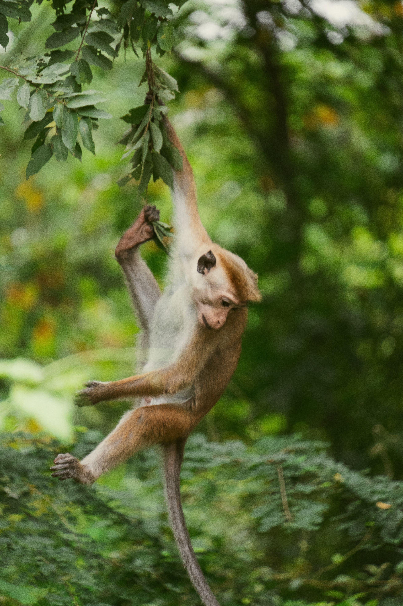

Penyakit Malaria Zoonotik
Malaria zoonotik (sering digelar sebagai malaria monyet) ialah penyakit berjangkit yang berpunca daripada parasit protozoa kumpulan Plasmodium yang hidup secara semula jadi di dalam haiwan primat (seperti kera dan beruk), tetapi berupaya menjangkiti manusia. Spesies parasit utama yang menyebabkan malaria zoonotik di Asia Tenggara dan Malaysia ialah Plasmodium knowlesi.
Sejarah Penemuan: Parasit P. knowlesi pertama kali ditemui pada tahun 1931 oleh penyelidik di India (Robert Knowles dan Biraj Mohan Das Gupta) melalui kajian ke atas kera ekor panjang (Macaca fascicularis).
Sejarah Jangkitan Manusia: Kes jangkitan semula jadi pertama pada manusia direkodkan pada tahun 1965 melibatkan seorang juruukur warga Amerika Syarikat yang pulang selepas bertugas di dalam hutan di Semenanjung Malaysia.
Vektor Utama & Perumah Semula Jadi
Penularan malaria zoonotik melibatkan dua komponen hidupan liar utama yang bertindak sebagai perumah dan pembawa:
- Perumah Semula Jadi (Reservoir Host): Kera ekor panjang (Macaca fascicularis) dan beruk (Macaca nemestrina). Haiwan-haiwan ini membawa parasit P. knowlesi di dalam darah mereka tanpa menunjukkan sebarang tanda sakit
- Vektor Utama (Pembawa): Nyamuk Anopheles betina daripada kumpulan Anopheles leucosphyrus. Nyamuk ini merupakan spesies nyamuk hutan yang membiak di lopak air semula jadi yang bersih, teduh, dan berhampiran kawasan hutan atau kebun. Di Malaysia, spesies vektor utamanya berbeza mengikut wilayah, iaitu Anopheles balabacensis (Sabah), Anopheles latens (Sarawak), dan Anopheles cracens (Semenanjung Malaysia).
Cara Jangkitan & Tempoh Pengeraman
Bagaimana Ia Berjangkit? Jangkitan berlaku melalui kitaran Haiwan → Nyamuk → Manusia:
- Nyamuk Anopheles hutan menggigit kera atau beruk yang mengandungi parasit P. knowlesi.
- Parasit tersebut berkembang biak di dalam badan nyamuk sehingga berpindah ke kelenjar liurnya.
- Apabila manusia memasuki kawasan hutan, kebun, ladang, atau kawasan pinggir hutan (akibat aktiviti pertanian, pembalakan, memancing, atau berekreasi), nyamuk yang terinfeksi ini akan menggigit manusia dan menyuntik parasit ke dalam aliran darah.
Tempoh pengeraman bagi P. knowlesi biasanya mengambil masa antara 9 hingga 12 hari selepas digigit nyamuk yang membawa parasit (julat umum sekitar 7 hingga 14 hari) sebelum gejala seperti demam panas, menggigil, dan sakit kepala muncul.Amaran Penting: Tidak seperti malaria manusia lain yang mengambil masa 48 hingga 72 jam untuk membiak, parasit P. knowlesi mempunyai kitaran pembiakan yang sangat pantas iaitu setiap 24 jam di dalam sel darah merah. Ini menyebabkan jumlah parasit dalam darah meningkat mendadak dan pesakit boleh jatuh ke tahap kritikal dengan sangat cepat jika lewat dirawat.
Cara Pencegahan Penyakit Malaria Zoonotik
Oleh kerana parasit ini bersumberkan hidupan liar di dalam hutan, pembasmian menyeluruh adalah sukar dilakukan. Pencegahan memfokuskan kepada perlindungan diri dan kawalan di kawasan berisiko:
- Pakaian Perlindungan: Pakai baju berlengan panjang, seluar panjang, dan stokin apabila bekerja di ladang, memburu, atau melakukan aktiviti riadah di kawasan hutan dan pinggir hutan.
- Gunakan Penghalau Nyamuk (Repellent): Sapukan krim atau semburan penghalau serangga (mengandungi DEET) pada bahagian kulit yang terdedah, terutamanya bermula waktu senja hingga ke malam apabila nyamuk Anopheles aktif mencari darah.
- Tidur Menggunakan Kelambu Berubat: Pastikan anda tidur di dalam kelambu yang dirawat dengan racun serangga (Long-Lasting Insecticidal Nets - LLIN) sekiranya bermalam di pondok kebun, kem pembalakan, atau tapak perkhemahan.
- Jauhi Habitat Kera/Monyet Liar: Elakkan memberi makan kepada kera atau monyet liar supaya haiwan ini tidak tertarik untuk menghampiri kawasan kediaman manusia, sekali gus mengurangkan risiko gigitan nyamuk hutan di sekitar rumah.
- Semburan Residu Dinding: Bagi penduduk di kawasan berisiko tinggi, benarkan pihak kesihatan melakukan semburan racun serangga residu pada dinding luar dan dalam rumah untuk membunuh nyamuk vektor yang hinggap.
Cara Rawatan Penyakit Malaria Zoonotik
Malaria zoonotik boleh disembuhkan sepenuhnya jika dikesan awal, namun kelewatan mendapatkan rawatan boleh membawa maut:
- Pengesahan Diagnosis Melalui Ujian Molekul: Pesakit yang demam selepas mempunyai sejarah masuk ke hutan atau kebun perlu menjalani ujian slaid darah (BFMP). Di Malaysia, sampel darah juga akan dihantar untuk ujian molekul (PCR) bagi mengesahkan spesies P. knowlesi dengan tepat.
- Terapi Kombinasi Berasaskan Artemisinin (ACT): Merujuk kepada garis panduan Kementerian Kesihatan Malaysia (KKM), pesakit P. knowlesi tanpa komplikasi dirawat dengan ubat oral ACT (seperti artemether-lumefantrine). Pesakit tidak memerlukan ubat Primaquine kerana parasit jenis ini tidak bersembunyi secara dorman di dalam organ hati.
- Rawatan Kecemasan Hospital (Kes Kritikal): Bagi pesakit yang mengalami paras parasit yang tinggi atau komplikasi teruk (seperti sesak nafas, jaundis teruk, atau kegagalan buah pinggang), kemasukan segera ke wad hospital adalah wajib untuk pemberian suntikan ubat Artesunate secara intravena (IV) serta pemantauan rapi 24 jam.